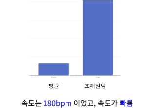

AI 면접 개별 보고서
1. 질문입니다. 질문입니다. 질문입니다. 질문입니다. 질문입니다. 질문입니다. 질문입니다. 질문입니다. 질문입니다. 질문입니다. 질문입니다. 질문입니다. 질문입니다. 질문입니다.
2. 질문입니다. 질문입니다. 질문입니다. 질문입니다. 질문입니다. 질문입니다. 질문입니다. 질문입니다. 질문입니다. 질문입니다. 질문입니다. 질문입니다. 질문입니다. 질문입니다.
3. 질문입니다. 질문입니다. 질문입니다. 질문입니다. 질문입니다. 질문입니다. 질문입니다. 질문입니다. 질문입니다. 질문입니다. 질문입니다. 질문입니다. 질문입니다. 질문입니다.
4. 질문입니다. 질문입니다. 질문입니다. 질문입니다. 질문입니다. 질문입니다. 질문입니다. 질문입니다. 질문입니다. 질문입니다. 질문입니다. 질문입니다. 질문입니다. 질문입니다.
5. 질문입니다. 질문입니다. 질문입니다. 질문입니다. 질문입니다. 질문입니다. 질문입니다. 질문입니다. 질문입니다. 질문입니다. 질문입니다. 질문입니다. 질문입니다. 질문입니다.
답변입니다. 답변입니다. 답변입니다. 답변입니다. 답변입니다. 답변입니다. 답변입니다. 답변입니다. 답변입니다. 답변입니다. 답변입니다. 답변입니다. 답변입니다. 답변입니다. 답변입니다.
형태소
속도

표정분석
종합코멘트
종합코멘트입니다. 종합코멘트입니다. 종합코멘트입니다. 종합코멘트입니다. 종합코멘트입니다. 종합코멘트입니다. 종합코멘트입니다. 종합코멘트입니다. 종합코멘트입니다. 종합코멘트입니다. 종합코멘트입니다. 종합코멘트입니다. 종합코멘트입니다.
AI 면접 종합 보고서
형태소
속도
표정분석
종합코멘트
종합코멘트입니다. 종합코멘트입니다. 종합코멘트입니다. 종합코멘트입니다. 종합코멘트입니다. 종합코멘트입니다. 종합코멘트입니다. 종합코멘트입니다. 종합코멘트입니다. 종합코멘트입니다. 종합코멘트입니다. 종합코멘트입니다. 종합코멘트입니다.
히스토리로 이동
메인화면으로 나가기